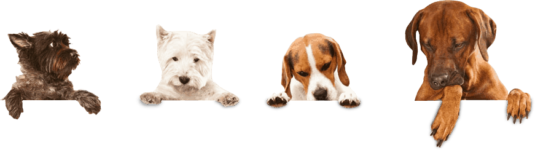
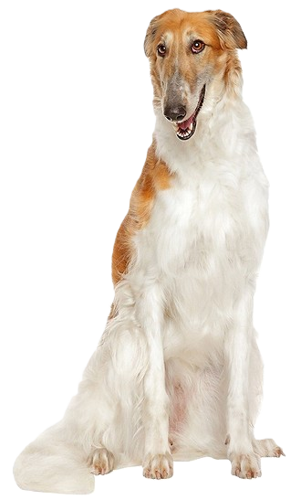
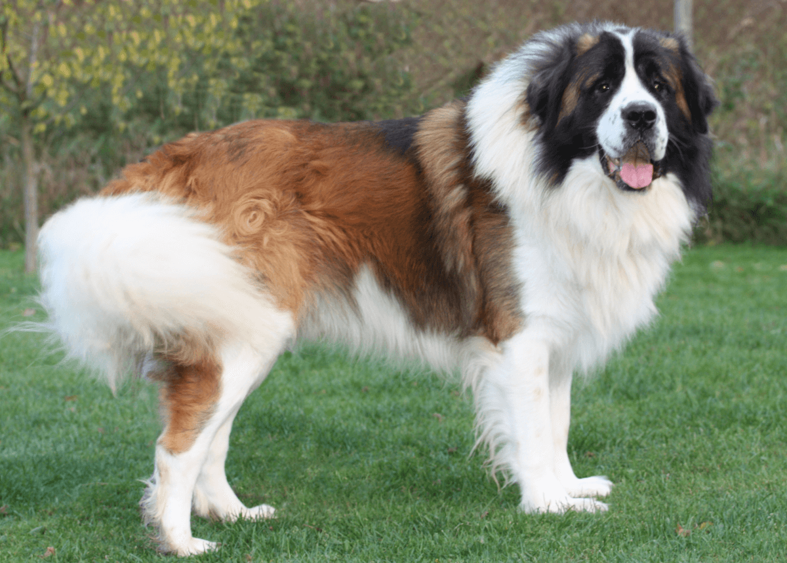
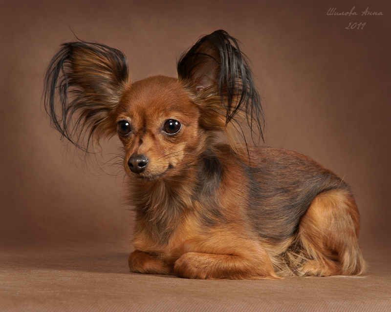

Питомник: "Собака - друг человека" :)
Навигация


Закладки (внутренняя навигация по странице)
Наш питомник занимается разведением русских пород собак. Исконно русские породы - выносливые, умные и беззаветно преданные. Каждая собака — это личность, член семьи. Щенков здесь не продают «в добрые руки», а вручают «в семью» после долгой беседы и тщательного отбора. Щенки растут в атмосфере любви и ранней социализации. Их знакомят с лесом, водой, шумом города и, конечно, с детьми.
Главное событие питомника - ежегодная выставка питомцев. Это не просто конкурс красоты, а настоящий семейный праздник, куда съезжаются владельцы собак со всей страны. Мероприятие проходит в последнюю субботу лета. Территория питомника преображается: появляются палатки с угощениями, детская площадка, фотозоны в русском стиле — с самоварами и расписными матрёшками. Победитель в номинации «Лучший представитель породы» получает уникальный кожаный ошейник ручной работы с гравировкой, а «Абсолютный чемпион выставки» — годовой запас корма от спонсоров.
С годами питомник «Собака — друг человека» стал больше, чем бизнес. Это — сообщество. Это место, где любители русских пород обмениваются опытами, где дети учатся ответственности, играя с щенками, а взрослые находят верных друзей. Дело не в титулах и медалях, а в том, чтобы вновь и вновь доказывать простую истину, вынесенную в название питомника. И каждый виляющий хвост, каждый преданный взгляд глаз — лучшее тому подтверждение. Ведь собака — и правда, самый верный друг человека!
- Алабай (Среднеазиатская овчарка)
- Банхар
- Восточно-сибирская лайка
- Восточноевропейская овчарка
- Западно-сибирская лайка
- Кавказская овчарка
- Московская сторожевая собака
- Московский водолаз
- Русская гончая
- Русская пегая гончая
- Русская псовая борзая
- Русский охотничий спаниель
- Русский черный терьер (собака Сталина)
- Русско-европейская лайка
- Сахалинский хаски
- Сибирский хаски
- Хотошо
- Южнорусская овчарка
- Якутская лайка

- Московский дракон
- Петербургская орхидея
- Русская каштанка
- Русская салонная собака
- Русская цветная болонка
- Русский той-терьер

Вернуться в навигацию